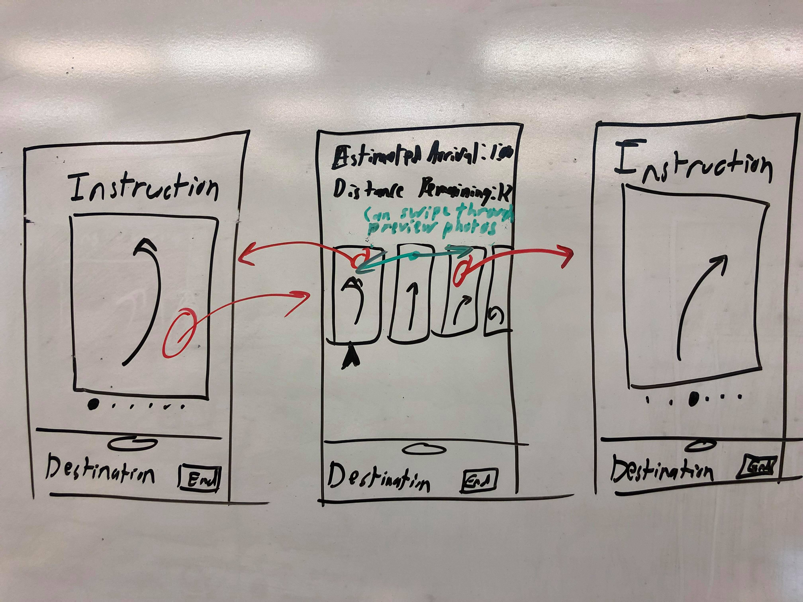

Formal Usability Study
Hypothesis
Our route preview options are both discoverable and usable, but users prefer the visual previews to be the primary preview method. Users find the text preview to be useful as a secondary mode..
Experimental design
Starting in the UXD classroom with a route chosen to the SEM lab, we will ask the tester to preview their route through the following two questions:
- Assuming you know how to get to the fourth floor from here, what do you do once you’re there?
- What are the first three steps you need to take?
After asking these questions, we will observe how long it takes them to answer, which method they chose to use for each, and what actions they took to get to the answer. Afterwards, we will ask them about any confusions or preferences they had.
Full script
You are a visitor at Olin College who is going from class to class. You have just finished learning about User Experience Design in AC213 and are scheduled to meet with Material Science students in the SEM room next. To do this, you are going to use Dest, an indoor navigation app.
After successfully setting the destination and route you want to take, you want to learn a few things about the path before you go. Knowing that you will be going up to the fourth floor, how would you determine what the next step after arriving on that floor that are?
What are the first three steps you are going to need to take?
Did the route preview behave the way you expected? Was there anything else you wanted from it?
Metrics
| Metric | If hypothesis is correct... |
|---|---|
| How long does it take to answer the question? |
|
| What steps do they take? |
|
| What method do they use? |
|
| What are their other reactions? |
|
Ideal test conditions
No one on our team has prior experience with controlled user experiments. We would ideally test this on over 100 users who have not seen our app before. The large sample size is necessary for both the relative usability/necessity of the route preview options and the overall usability of them. Our two route preview options are visual and text-based - we need a large sample of people to represent preferences in order to not skew our results. Likely our testers will be Olin students, who may be biased to pressing through when something is difficult to find, or other similar usability biases. Each user would only be needed for one iteration. After the first several tests, some signifiers could be added if it was indicated that the route preview options were not discoverable.
Results
User 1
| Metric | Result |
|---|---|
| How long does it take to answer the question? |
|
| What steps do they take? |
|
| What method do they use? |
|
| What are their other reactions? |
|
User 2
| Metric | Result |
|---|---|
| How long does it take to answer the question? |
|
| What steps do they take? |
|
| What method do they use? |
|
| What are their other reactions? |
|
Implications
If we assume that ~50% of users only use swiping through photos, and ~50% of users use both, we could conclude that:
- Swiping through photos is the primary/first method that people use to preview the route.
- Some, but not all, people would discover and use the text preview menu to preview their route.
- People that didn’t use the text preview to answer the questions would still feel that it’s a useful functionality.
- People expect tapping on photos to do something, though what they expect isn’t well defined.
Next steps
If we had run this with 100 people as desired, we would have a better idea of what might need to be changed. As it stands, there were no concrete problems that were vocalized about the current design.
If more users demonstrated that they wanted to tap the photos and get a response, we would implement a ‘zoom out’ functionality. This might take the form of displaying multiple pictures in a row, so that the user could visualize the next few steps at once.
Based on some feedback from our first tester, we also might implement more granularity to the steps. Currently, we have some assumptions that the user will use the photos to bridge any gaps, but this does not work for anyone using a TTS program. We could include a granularity scale in a finished product, ranging from very broad instructions to step-by-step.